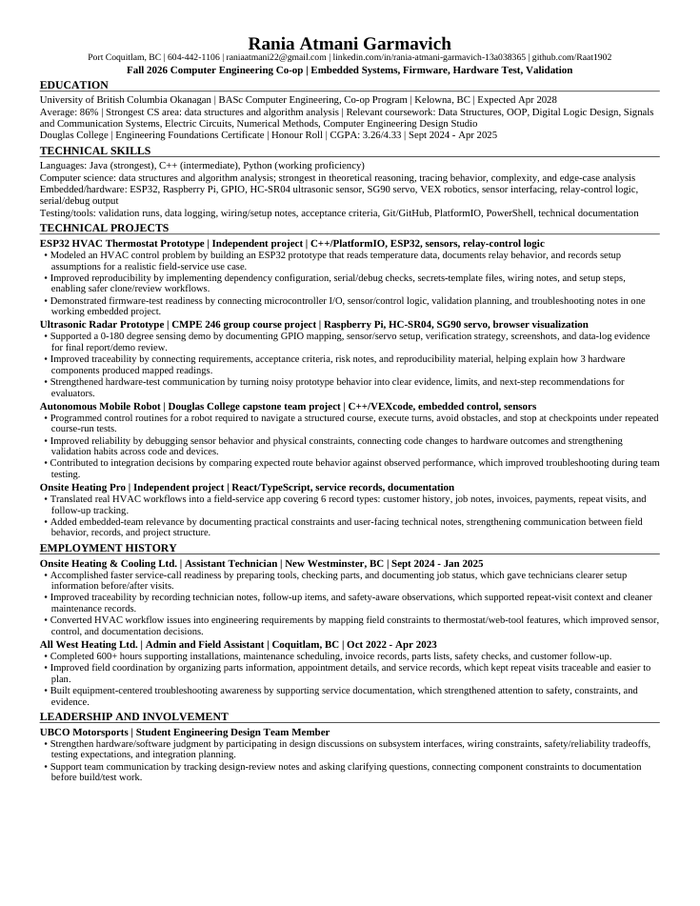
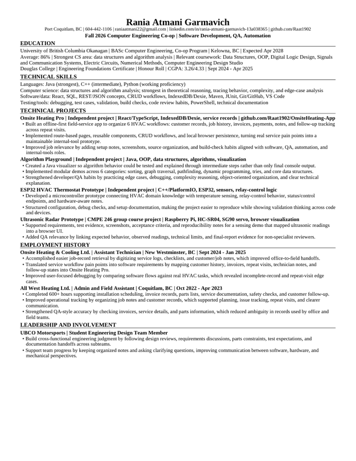
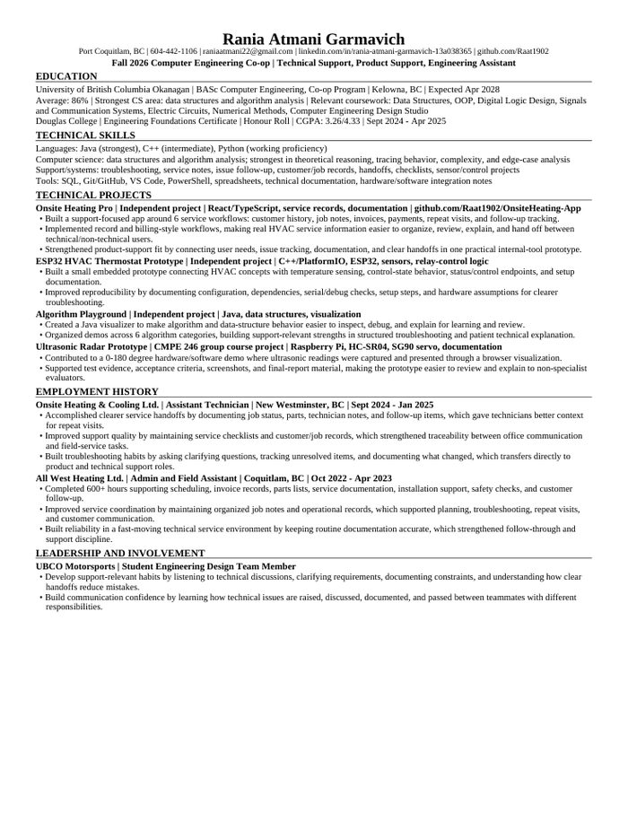

VERSION 01
Embedded Systems, Firmware, Hardware Test & Validation
Best for embedded software, firmware, electronics, validation, test engineering, hardware integration, and technical lab roles.
RÉSUMÉS
The core background is consistent across all three: Computer Engineering at UBC Okanagan, an 86% average, hands-on HVAC workflow experience, and projects spanning software and hardware. Each version emphasizes the most relevant evidence for the role.

VERSION 01
Best for embedded software, firmware, electronics, validation, test engineering, hardware integration, and technical lab roles.

VERSION 02
Best for software development, test automation, QA, internal tools, web applications, and developer-focused co-op roles.

VERSION 03
Best for technical support, product support, implementation, operations, customer-facing technology, and engineering assistant roles.
CONTACT
Reach out directly and I can provide the résumé version most aligned with the opportunity.